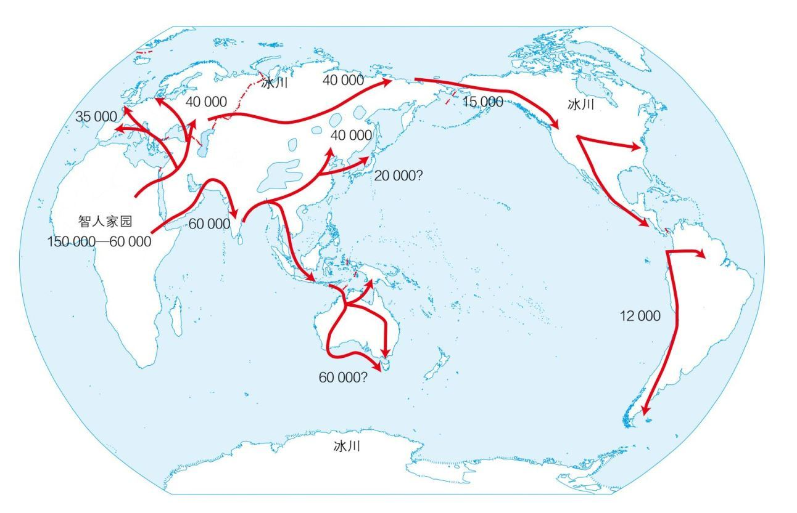
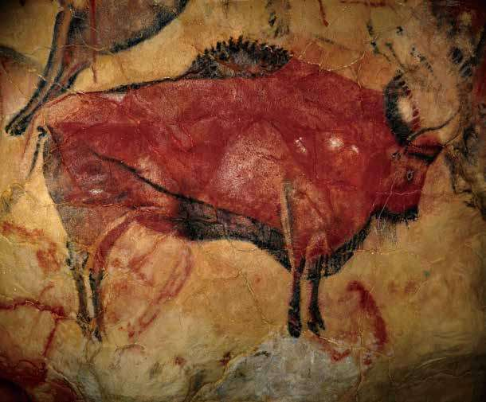

伊恩·莫里斯的社会发展指数图表清楚地呈现出人类文明进化轨迹的不断上升趋势，曲线的幅度也显示出不同时代有不同的上升速度。社会的发展总在起伏中曲线上升，而每一个历史阶段的起伏又有不同的规律。人类社会发展历史始终保持了上升趋势，但在不同阶段速度不同，各有特点。所以我认为要理解人类文明的演进过程，需要划分不同的阶段分别加以分析。
我把文明定义为人类利用自身与环境中的资源在生存发展中所创造出来的全部成果，意在计量人类和其最接近的动物祖先之间拉开的距离。容易和文明混淆的另一个概念是文化，文化是指生活在不同地区的人们，在漫长的时间里形成的独特的生活方式、生活习惯及信仰。文化用来区分不同地区、不同人群之间的区别，而文明则是用于描述人类发展的共性，并区别人类与动物祖先。在人类历史的长河里，工业文明开启了一个新的历史阶段，农业文明的到来也带来一个新的历史阶段。在农业文明出现之前，人类的生产方式主要是采集和狩猎。根据人类生产方式的不同，我大体上把人类文明的发展阶段分成三部分：采集狩猎文明或1.0文明，农业畜牧业文明或2.0文明，以及以工业革命为先导的科技文明或3.0文明。
在1.0文明时代，人类采集、使用能量的方式似乎一直没有什么变化，而且似乎与其他以捕猎为生的动物没有太大不同。但这是一个误解。人类的1.0文明，其实发生在7万年前，是因气候变化引发出的一次巨大的飞跃。
要理解人类的特性，必须要理解人类生活的环境。地球有45亿年历史，生物大概只有15亿年历史，而人类只有15万年历史。自然环境对所有生物的影响都是至关重要的，其中气候是最大的影响因素。
地球的气候在大约5000多万年以前开始发生了一次大的变化，当时大陆架的移动使得绝大部分陆地移动到了北半球，而使南半球基本上以海洋为主。另外一次变化是在1400万年以前，这时形成大陆架的火山行动基本上停止，地球的温度也随之下降，于是南极形成终年的积雪，而北极由于没有大陆架，雪比较容易融化，所以直到275万年前才形成终年的积雪。在这样的大背景下，米兰科维奇循环开始对今天的地球气候产生了周期性的影响。地球围绕太阳公转的轨道并不是正圆形，因为受到其他星球的引力，常常是椭圆形。另外地球的自转过程里通常会有倾斜，自转轴也有进动。受这三个因素影响，地球气候就形成一个以每26000年、41000年、96000年为周期的三大循环。这三大循环造成了地球接受太阳光热的数量不同，形成了气候的冰期和间冰期。
冰川纪在历史上出现过40次到50次，最严重的两次发生在19万年前和9万年前，这个时段在人类的起源和早期发展中起到了关键性的决定作用。在冰川纪最严重的时候，仅北冰洋的冰川就覆盖了北部欧洲、亚洲、美洲。地球表面的水大多被吸收到冰川里，地球变得很干燥，海平线比现在低300英尺。加之冰川把阳光反射回大气，导致气温更低，植物和动物减少，空气中产生温室效应的二氧化碳减少，气温又进一步降低。现代人的祖先智人（Homo sapiens）在15万年前左右出现，这时期恶劣的气候条件让他们只能生活在非洲靠近赤道的很有限的区域之内。绝大多数基因学家和考古学家认为，当时人类的总数一度下降到2万人左右，人类也没有显示出任何将来会征服地球的迹象。这是人类历史上最黑暗的时代。但是到了7万年前左右，人类的运气开始好转，这时米兰科维奇循环朝相反方向变化，非洲的东部和南部开始变得更加温暖湿润，给人类提供了更好的自然条件来狩猎、采集，人口也开始随着食物的增加迅速增长。也是在这时，人作为一种独特的动物，开始显示出自己真正的优势。
人类在刚刚出现的时候，就显出和其他动物，哪怕是“近亲”类人猿很大的不同。这个区别在气候变暖之前并没有充分显示出来，但一旦气候创造了有利的条件，人类就开始显示出巨大的优势。人类和其他动物相比，最大的特点就是脑容量巨大，计算能力超强。虽然大脑只有人体重的2%，却要消耗人20%的能量。人类如果要等大脑完全成熟以后出生，母亲将根本无法生产。为了解决这个问题，人类只能在胎儿大脑没有完全发育成熟之前就把他们提前生产出来。这和其他哺乳动物都不一样。无论是牛、马、羊、狮子、老虎，这些动物出生后很快就可以独立站立、生长、生活，甚至捕食。可是人出生的时候离成熟和独立生活还很远，还需要几年时间才能够站立、行走、说话，大脑才能完全发育成熟。所以人类新生儿的死亡率很高，但是成熟后的优势也很明显。当气候变得有利于生物，人类的优势就表现得格外突出。这个优势充分体现在了人类文明的第一次飞跃，也就是走出非洲的飞跃。
一方面由于气候的变化，一方面受原来生存环境的影响，人类的祖先开始出走非洲，离开原来的生活地，去往全新的生活环境。这次文明的飞跃从一开始就显示出人这种动物独特的进取心和智力。从公元前6万年开始，人类从非洲索马里进入到阿拉伯，到欧亚大陆，然后从北非进入到欧洲，从欧亚大陆进入到东方亚洲，从亚洲南部进入到澳洲，从欧亚大陆穿过阿拉斯加进入北美，从北美再进入到南美。
图4大体显示了当时人类迁移的路径。在大概四五万年的时间里，人类的足迹基本上遍及全球。随着气候不断变暖，越来越多的地方出现了更多的植物、动物，使得靠狩猎和采集的人类在世界上各个地方都有可以生存的机会。虽然大自然给各种生物创造的条件是一样的，但是并非所有的物种都有像人类这样强烈的进取心，克服重重困难走遍全球。这一次行走即便在今天看来都是惊人的、难以想象的旅程。试想当时的人类祖先要跨过大冰川，越过海洋，在对未来和目的地一无所知的情况下，一代一代以顽强的决心占领了全球。从公元前6万年，一直到公元前12000年前，人类用了几万年的时间，从非洲出发，一路占据到南美最南端，以平均每年一英里的速度遍布了整个地球。这个时候人的主要工具就是石器，交通工具就是双腿。这时还没有农业，没有畜牧业，没有其他的动物作为依靠，也没有任何其他工具，就靠着一路打猎和采集，并以很小的团队为组织一路前进。这一场人类祖先的远征，今天想起来还会令人震撼，激动人心。

关于出走非洲的智人是否就是人类祖先一直是学术界争论的问题，直到90年代才彻底被解决。1987年，基因学家瑞贝卡·卡恩带领她的团队第一次得出突破性的结论。通过对只有女性携带且只能通过女性遗传的线粒体（Mitochondrial）基因进行全球范围内的研究，瑞贝卡·卡恩发现了以下几个结论：第一，基因多样化在非洲比在全球任何其他地方都更多；第二，其他地方的基因多样化都是非洲这种多样化的一个分支；第三，科学家能找到最古老的线粒体基因来自非洲。这三个发现，无一不指向同一个结论：全世界都有一个共同的妇女祖先，她生活在非洲，被称为“非洲的夏娃”。此后的多项研究都在不同程度上证实了卡恩的发现，只不过把非洲夏娃出现的时间推迟到了公元前15万年左右。到了90年代，其他基因学者通过检测DNA中只能在男性间遗传的Y染色体，得出了几乎同样的结论，即人类所有男性的祖先也来自非洲，被称为“非洲的亚当。”所以截至90年代，关于智人是否是人类祖先的争论有了答案。我们今天所有人的共同祖先，都是从非洲走出的智人在全球各地留下的后代。而其他所有的猿人和类人猿在人类离开非洲后的几万年内，几乎都绝迹了。
人类出走非洲后，在一路上都留下了文明的痕迹，其中最著名之一是已有18500年历史的阿尔塔米拉洞（Cueva de Altramira）壁画。这幅壁画达到的艺术造诣高度惊人，极其富有创造性，以至于毕加索在参观了这幅壁画之后曾经慨叹道：“我们现在所有的人都无法画出这种水平来。”他认为和这幅壁画相比，人类之后所有的作品都是退步。

后来的考古发现，在人类走遍全球的这一路上留下的绘画、石器、妇女的装饰等，都体现出人的创造性和智慧。虽然人类诞生之初也只是采集和狩猎，看起来和动物祖先并没有太多区别，但是他们表现出了强烈的进取心和创造力。即便是其他的类人猿，也没有像人类一样，在短短几万年里步行穿过了冰川、海洋，足迹遍布全球；也没有像人类一样，在所有地方都留下了自己的想象力和创造力。这种决心、驱动力、对于意义的追求、艺术的表达，其他的类人猿都不具备。人强烈的进取心和高超的智力，使他/她从这时起就显示出来和任何其他动物的不同。
人类这一次走出非洲对全球的覆盖，虽然没有在生活方式上发生巨大的变化，但是人口从最初的2万人左右迅速增长，更重要的是人类已经遍及全球所有的地方。当全球气候开始变化，给生物提供新的发展机会时，人类已经为利用这些机会做好了准备。所以这一次出走非洲，让人类开始有了第一次文明的大飞跃，濒于灭种的可能性大大降低，基因的多样性和适应性大大增加，并开始在全球寻找最适合人类发展的生存条件。当这种生存条件在地球的某些地区首先出现的时候，人类利用机会的能力已经彻底形成，新的飞跃的基础也已经奠定坚实。